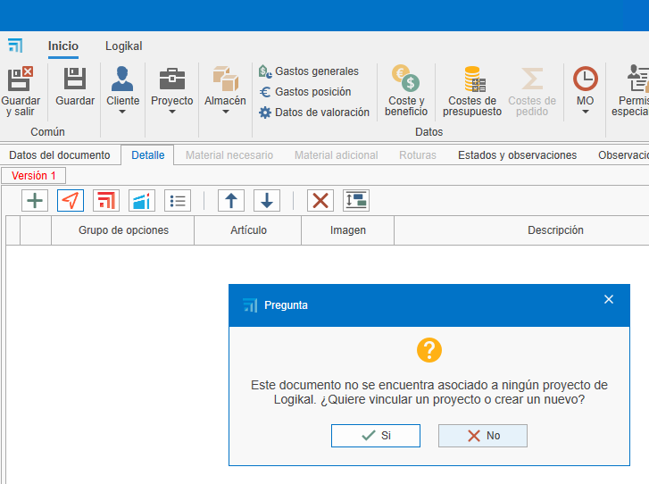

Relación entre fases y proyecto en ENBLAU y Logikal
1. Introducción
Explicación de la relación entre las fases de un proyecto en ENBLAU y Logikal.
2. Modo de trabajo en Logikal
En el modo de trabajo puedes definir cómo actuará ENBLAU con Logikal al crear nuevas versiones, aceptar presupuestos, generar una medición o crear una producción en ENBLAU.
-
Configúralo desde el apartado Configuración - General - Logikal.


2.1. Modo por fases (modo por defecto)
El modo por fases mueve las posiciones y unidades de cada fase del documento de ENBLAU y en las fases del proyecto en Logikal.
- Crear un presupuesto desde ENBLAU:
1. Versión 1
- Al crear un presupuesto en ENBLAU, esta versión se reflejará en Logikal en "Posiciones (1)" dentro del mismo proyecto.

2. Pedido
- Al confirmar el pedido en ENBLAU, se generará un pedido y luego una fase en Logikal denominada "Presupuesto aceptado". Moviendo las posiciones de la fase anterior a la siguiente fase del pedido.

3. Producción 1
- Desde el pedido en ENBLAU, al crear una producción, se generará una nueva fase en Logikal llamada "nº presupuesto P1". Moviendo las posiciones y las unidades indicadas de la fase anterior a la siguiente fase de producción.

4. Medición 1
- Desde el pedido en ENBLAU, al crear una medición, se generará una nueva fase en Logikal denominada "nº presupuesto M1". Moviendo las posiciones y las unidades indicadas de la fase anterior a la siguiente fase de medición.

5. Producción 2
- Desde la medición en ENBLAU, al crear una producción (considerando los cambios en la medición), se generará una nueva fase en Logikal con el nombre "nº presupuesto M1 P2". Moviendo las posiciones y las unidades indicadas de la fase anterior a la siguiente fase de producción.

⚠️ ¡Importante! Para ese modo las posiciones borradas desde ENBLAU se eliminan de forma permanente en Logikal.
2.2. Modo por proyectos independientes
El modo por proyecto mueve las posiciones y unidades de cada fase del documento de ENBLAU, pero en Logikal se crea un proyecto (mismo número del presupuesto) para cada fase de ENBLAU.
- Crear un presupuesto desde ENBLAU:
1. Versión 1
- Al crear un presupuesto en ENBLAU, esta versión se reflejará como un proyecto en Logikal en la fase "Posiciones (1)".

2. Pedido
- Al confirmar el pedido en ENBLAU, se generará un pedido y luego un nuevo proyecto en Logikal con el mismo "nº presupuesto".

3. Medición 1
- Desde el pedido en ENBLAU, al crear una medición, se generará un nuevo proyecto en Logikal con el mismo número del "nº presupuesto M1" con las posiciones y las unidades indicadas de la fase anterior a la siguiente fase de medición en ENBLAU.

4. Producción 1
- Desde la medición en ENBLAU, al crear una producción (considerando los cambios en la medición), se generará un nuevo proyecto en Logikal con el mismo número del "nº presupuesto M1 P1" con las posiciones y las unidades indicadas de la fase anterior a la siguiente fase de producción en ENBLAU.

2.3. Modo por fases duplicando posiciones
El modo por fases duplicando posiciones copia las posiciones y unidades de cada fase del documento de ENBLAU y en las fases del proyecto en Logikal, manteniendo siempre una copia en cada fase.
- Crear un presupuesto desde ENBLAU:
1. Versión 1
- Al crear un presupuesto en ENBLAU, esta versión se reflejará en Logikal en "Posiciones (1)" dentro del mismo proyecto.

2. Pedido
- Al confirmar el pedido en ENBLAU, se generará un pedido y luego una fase en Logikal denominada "Presupuesto aceptado". Copiando las posiciones de la fase anterior a la siguiente fase del pedido.

3. Medición 1
- Desde el pedido en ENBLAU, al crear una medición, se generará una nueva fase en Logikal denominada "nº presupuesto M1". Copiando las posiciones y las unidades indicadas de la fase anterior a la siguiente fase de medición.

4. Producción 1
- Desde la medición en ENBLAU, al crear una producción (considerando los cambios en la medición), se generará una nueva fase en Logikal con el nombre "nº presupuesto M1 P2". Copiando las posiciones y las unidades indicadas de la fase anterior a la siguiente fase de producción.

⚠️ ¡Importante! Para ese modo las posiciones borradas desde ENBLAU se eliminan de forma permanente en Logikal.
3. Creación proyecto Logikal
Al crear un presupuesto en ENBLAU y luego añadir una posición de Logikal, esta se vinculará a un proyecto en Logikal o, en su defecto, se creará uno nuevo.



 Español
Español
 English
English
 Italiano
Italiano
 Português
Português